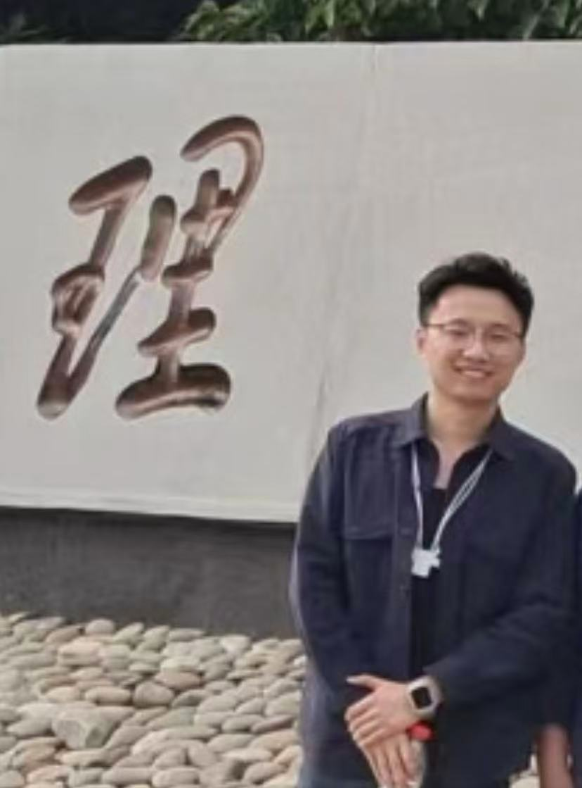

Hi, I'm Haiguang Zhang (张海光)
M.Eng. in Computer Technology, Dalian University of Technology.
NLP · Legal AI · Knowledge Graphs
Email: maxwellzhg@gmail.com
Google Scholar: link |
GitHub: link
|
 |
Hi, I'm Haiguang Zhang (张海光)
M.Eng. in Computer Technology, Dalian University of Technology. |
I’m passionate about NLP, LLMs, and legal AI systems. My research focuses on building explainable AI for legal decision-making.
Chinese (Native), English (IELTS 7.0)
Python · PyTorch · Java · C++ · NLP · Knowledge Graph
Feel free to connect with me 🚀